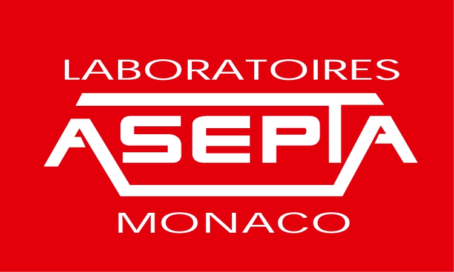

Projets de stage
Mes projets de stage réalisés durant ma formation BTS SIO

Stage 1ère année
Stage en entreprise dans le cadre du BTS SIO, mise en pratique des compétences en environnement professionnel.
Stage 2ème année
Deuxième stage en entreprise, approfondissement des compétences techniques et professionnelles.